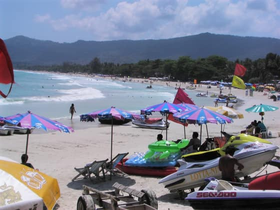

หน้า ต้นแบบ สำหรับรีวิวก่อนตัดสินใจ — ยังไม่ลิงก์จากเว็บจริง และตั้ง noindex, nofollow ทุกหน้า
ที่พัก ที่กิน ที่เที่ยว ทั่วไทย — เก็บใส่ทริปได้เลย
รีวิวที่พัก ร้านอาหาร และที่เที่ยวทั่วไทย — บันทึกที่ถูกใจไว้ แล้วจัดเป็นทริปของคุณเองได้เลย ไม่ต้องสมัครสมาชิก
วางแผนต่อ
เปิดหน้าทริปยังไม่มีที่บันทึกไว้
กดปุ่ม 🔖 เพิ่มเข้าทริป ที่การ์ดไหนก็ได้ในหน้านี้ แล้วรายการจะมารออยู่ตรงนี้ พร้อมให้จัดเป็นวัน ๆ ในหน้าทริป ไม่ต้องสมัครสมาชิก และเก็บไว้ในเครื่องคุณเอง
แผนพร้อมใช้
ดูทุกจุดหมาย
มิชลิน & Asia’s 50 Best
ดูลิสต์เต็มเมืองท่องเที่ยวยอดนิยม
ดูทุกเมือง-
-
-
-
ภาคใต้ · อันดามัน
ภูเก็ต
เกาะใหญ่ฝั่งอันดามัน หาดทรายขาว ย่านเมืองเก่าชิโน-โปรตุกีส และอาหารฮกเกี้ยน
-

ภาคใต้ · อ่าวไทยเกาะสมุย
เกาะใหญ่อ่าวไทย หาดเฉวง-ละไม พระใหญ่ หินตาหินยาย หมู่บ้านประมงบ่อผุด และอ่างทอง
-
ภาคเหนือ · แม่ฮ่องสอน
ปาย
เมืองเล็กในหุบเขาแม่ฮ่องสอน ทะเลหมอก คาเฟ่ริมนา ถนนคนเดิน ปายแคนยอน และสะพานประวัติศาสตร์
-
-
ภาคใต้ · สตูล
เกาะหลีเป๊ะ
เกาะน้ำใสในหมู่เกาะตะรุเตา สตูล หาดทรายขาวละเอียด ดำน้ำดูปะการัง และเกาะรอบ ๆ น้ำเขียวมรกต
เลือกตามภาค
ดูทั้ง 77 จังหวัดภาคกลาง
15 จังหวัด · กรุงเทพและเมืองรอบ ๆ ประวัติศาสตร์อยุธยา ตลาดน้ำ
เว็บนี้มีอะไรบ้าง
- รีวิวที่พักรายแห่ง
- 2,401
- บทความจัดอันดับ
- 397
- คู่มือและบทความ
- 4,447
- จังหวัด
- 77
นับจากไฟล์เนื้อหาไทยในระบบ ตรวจนับ 8 ก.ย. 2026 · เว็บมี 9 ภาษา
บรรณาธิการ
Doctor Chat
หมอผู้รักการเดินทาง เที่ยวมาแล้วหลายสิบประเทศทั่วโลก ผู้ก่อตั้ง Thailandaddict ที่ตั้งใจรวมที่พัก ที่กิน ที่เที่ยวทั่วไทยแบบครบและเชื่อถือได้ในที่เดียว